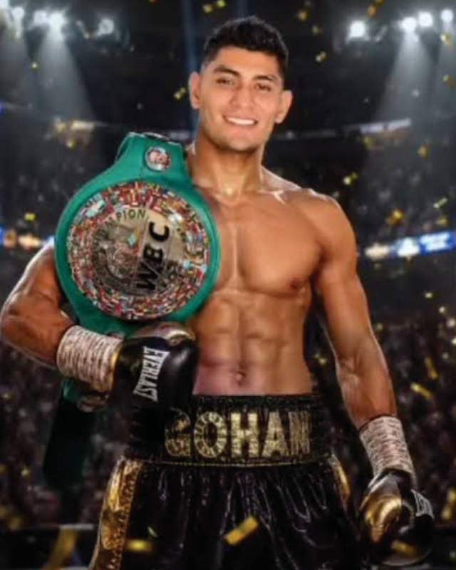

← Nuestros peleadores
Gohan Rodríguez

Gómez Palacio, Durango · 21-4-1, 4 KO’s
Por influencia de su padre tuvo su primer acercamiento al boxeo; gran fanático de las artes marciales y de la disciplina, transmitió a su hijo el respeto por el deporte, logrando pronto grandes resultados en el terreno aficionado; el salto al profesionalismo era natural para Gohan que debutó a los 17 años; con un inicio complicado que forjó su carácter y lo llevó a conquistar triunfos importantes que lo llevaron a enfrentar al actual campeón mundial Galal Yafai en Abu Dhabi; su estilo inteligente e incansable lo ha llevado a grandes experiencias como un par de largos campamentos en Japón y la conquista del título Silver WBC de los supermoscas, cinto que se adjudicó tras derrotar con autoridad al doble campeón mundial nicaragüense Cristofer ‘Látigo’ Rosales, mismo que defendió sobre el japonés Joe Shirashi por la vía del cloroformo.